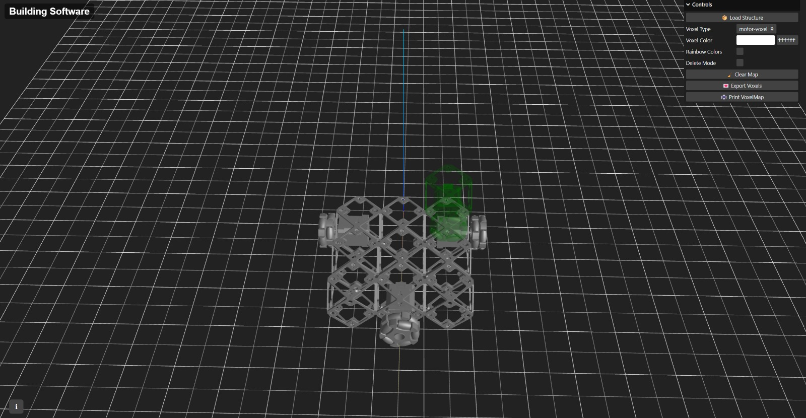

Voxel lattice assembly · Live robot control · Three.js

Voxel Robot CAD is a browser-based toolchain for designing and assembling voxel lattice structures with a mobile robot. Developed at the MIT Center for Bits and Atoms, it connects interactive 3D CAD in the browser to real-time robot control for hierarchical discrete lattice assembly.
An interactive Three.js environment for placing, rotating, and exporting voxel structures. Users click to place voxels, rotate and flip them with keyboard shortcuts, choose voxel type and color from a GUI, and export the finished structure as JSON for downstream assembly.
A live assembler interface that connects to the mobile robot over the network. It provides jog controls, tool on/off, scale adjustment, and coordinate-based moves relative to a home position — letting operators assemble designed structures voxel by voxel in real time.
Developed with friends and collaborators at MIT CBA:
Marcello Tania